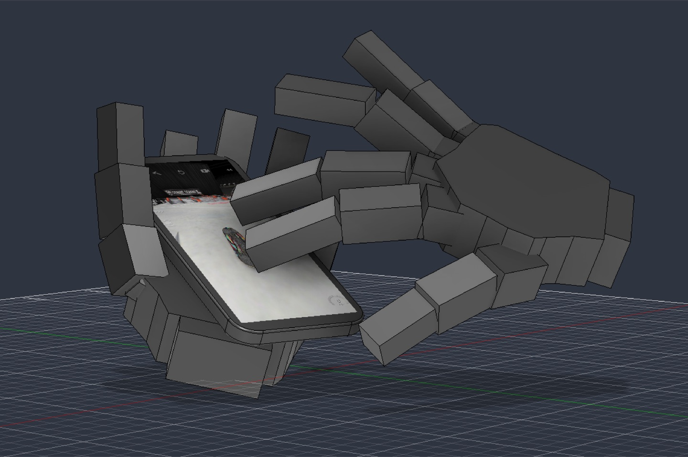
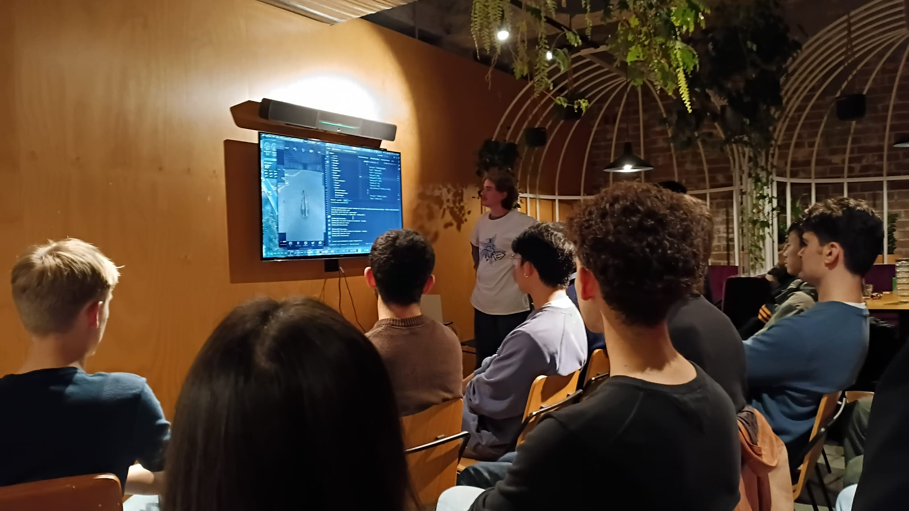
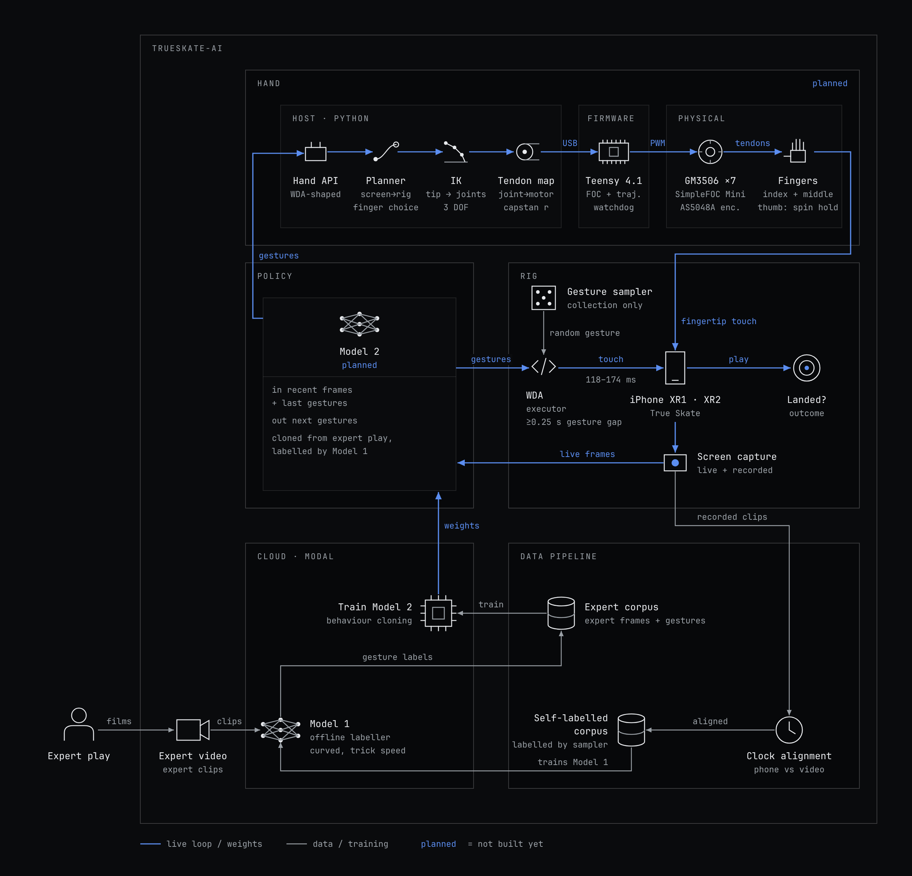
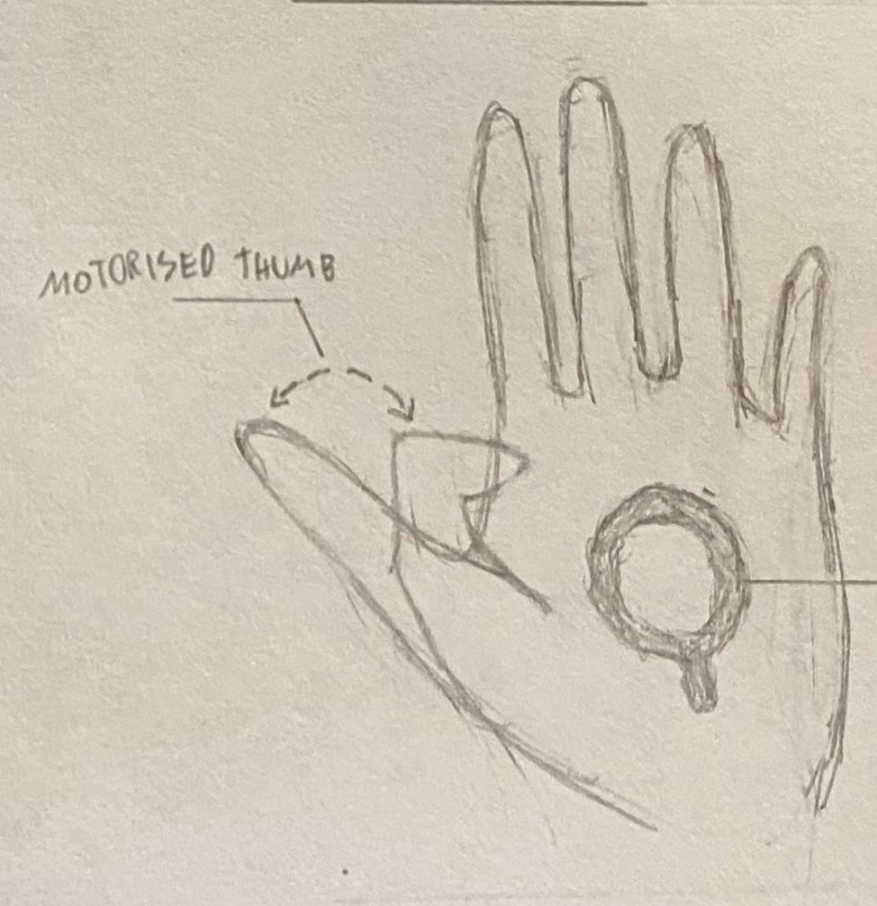
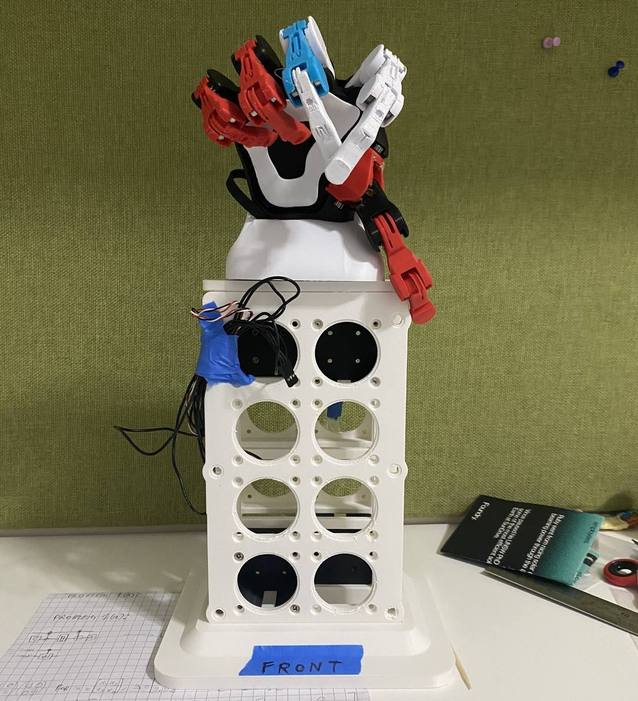

TrueSkate-AI — an animated sculpture
A personal research project on learning fine motor control from vision alone: a robot hand playing True Skate on unmodified iPhones, seeing only screen frames and acting only through touch.

01WHAT IT IS
I’m training a machine learning model to play True Skate on unmodified physical iPhones. It sees only screen frames and acts only through touch — no access to the game’s code.
The controls are continuous, the feedback is delayed, and the game reports a trick’s name on screen but nothing else.
My conjecture: I can’t assimilate the whole internet in a lifetime, and I can’t train a frontier LLM with <$1000 of compute — but I did master True Skate well within a lifetime, so it may be possible to train a machine learning model to play it on <$1000 of compute.
The long-term vision is a tendon-driven robotic hand tapping and swiping on an actual phone screen (read section 04 for a thorough overview). I am currently experimenting with offline learning with the intention to translate the 2D trajectories inferred by the trained model into 3D trajectories taken by the fingers of the robotic hand.
02DEMO



03HOW IT WORKS
The protoype of this project used covariance matrix adaptation evolution strategy (CMA-ES) – a sample-efficient RL approach – with the on-screen trick name as the reward signal. The project is now being built around two-stage behavioral cloning, outlined below:

An earlier CMA-ES baseline and a collapsed PPO + HER attempt taught me what this noisy real-time setting could and couldn’t give back.
04THE HAND
Most robotic hands in the literature are designed to grip and manipulate objects, which means they are optimised for torque rather than speed. Mine needs relatively little torque but requires very high speed, acceleration and precision. I’m basing my design on the open-source ORCA hand – with gimbal motors instead of high-torque servos – and intend to make hardware modifications until it is optimised for virtual finger skating.




True Skate is a game by True Axis, available on the app store and play store — TrueSkate-AI is an independent research project and is not affiliated with or endorsed by True Axis.